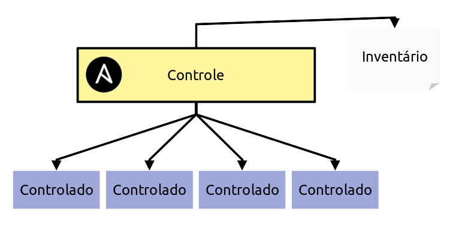

Entendendo a estrutura do ansible
Embora até o momento executamos o ansible somente em uma máquina local. E confesso que já pode ser bastante útil para padronizar suas configurações após uma formatação, por exemplo. O Ansible brilha quando estamos falando de rede.
Arquitetura de uso do ansible
O Ansible distingue as máquinas em duas categorias. O nó de controle, onde o ansible está instalado e os nós controlados. Que máquinas em que o ansible pode se comunicar via SSH e executar os comandos:

Dessa forma podemos partir do nó de Controle e enviar rotinas de automação para todos os nós Controlados.
Para isso o ansible conta com um arquivo de inventário. Um lugar onde todas as máquinas que serão controladas pelo controlador devem ser registradas.
Arquivo de inventário
Por padrão o arquivo de inventário das máquinas ficam no /etc/ansible/hosts. Vamos criar esse arquivo agora.
# instalação do Nano, não vou obrigar ninguém a usar o Emacs ;)
ansible localhost -m package -a "name=emacs state=present" -b
sudo nano /etc/ansible/hosts
É nesse arquivo que colocamos os endereços dos nós que serão controlados pelo ansible. O arquivo tem o seguinte formato:
Por exemplo, vamos cadastrar nossa outra vm arch que será controlado pelo main. Para isso, precisamos iniciar essa máquina virtual. Antes disso, temos que sair do ssh em main:
Agora voltamos a maquina principal. A máquina onde as máquinas virtuais foram instaladas. Vamos iniciar nossa outra máquina. O ubuntu:
Com isso, agora devemos ter duas máquinas no nosso virtual box:
[AA] - Mudar essa imagem

Com nossa vm já de pé, podemos enviar um comando para o vagrant nos dizer o endereço ip da máquina ubuntu:
vagrant ssh ubuntu -c "ip addr"
1: lo: <LOOPBACK,UP,LOWER_UP> mtu 65536 qdisc noqueue state UNKNOWN group default qlen 1000
link/loopback 00:00:00:00:00:00 brd 00:00:00:00:00:00
inet 127.0.0.1/8 scope host lo
valid_lft forever preferred_lft forever
inet6 ::1/128 scope host
valid_lft forever preferred_lft forever
2: eth0: <BROADCAST,MULTICAST,UP,LOWER_UP> mtu 1500 qdisc fq_codel state UP group default qlen 1000
link/ether 08:00:27:fa:60:9b brd ff:ff:ff:ff:ff:ff
altname enp0s3
inet 10.0.2.15/24 metric 1024 brd 10.0.2.255 scope global dynamic eth0
valid_lft 86241sec preferred_lft 86241sec
inet6 fe80::a00:27ff:fefa:609b/64 scope link
valid_lft forever preferred_lft forever
Podemos ver que o IP associado a ubuntu é 10.0.2.15. Que é o endereço que colocaremos no nosso inventário.
Agora vamos voltar a nossa máquina main via ssh:
E vamos alterar nosso arquivo /etc/ansible/hosts dessa forma e com o comando sudo nano /etc/ansible/hosts:
Dessa forma dissemos ao ansible que existe um grupo chamado ubuntu, uma dessas máquinas tem o ip 10.0.2.15. Assim, podemos enviar comandos para o grupo ubuntu.
Primeiro comando remoto
E podemos checar enviando um ping para a vm ubuntu usando o seguinte comando ansible ubuntu -m ping:
ansible ubuntu -m ping
The authenticity of host '10.0.2.15 (10.0.2.15)' can't be established.
ED25519 key fingerprint is SHA256:FyOy2yTlOHSLJXVF+lmYjPywdfmQprApMWrsQ7KxUlI.
This host key is known by the following other names/addresses:
~/.ssh/known_hosts:1: localhost
Are you sure you want to continue connecting (yes/no/[fingerprint])? yes
10.0.2.15 | UNREACHABLE! => {
"changed": false,
"msg": "Failed to connect to the host via ssh: Warning: Permanently added '10.0.2.15' (ED25519) to the list of known hosts.\r\nvagrant@10.0.2.15: Permission denied (publickey,password).",
"unreachable": true
}
Um erro ocorreu por conta da segurança. O SSH da vm ubuntu não permitiu que o ansible fizesse a conexão. Para isso precisamos trocar chaves entre os hosts para que aconteça de maneira segura.
Troca de chaves SSH
Vamos voltar ao shell e digitar os seguintes comandos:
ssh-keygen # para gerar uma chave ssh para nossa vm `main`
ssh-copy-id vagrant@10.0.2.15 # Para copiar a chave de `main` para `ubuntu`
Se executarmos o ping novamente obteremos sucesso:
ansible arch -m ping
10.0.2.15 | SUCCESS => {
"ansible_facts": {
"discovered_interpreter_python": "/usr/bin/python3.10"
},
"changed": false,
"ping": "pong"
}
Isso significa que a comunicação com os dois nós está acontecendo de maneira correta. Mas, faltou entender o que o comando ansible ubuntu -m ping significa:
- ansible: Chama o ansible
- ubuntu: O nome do grupo do inventário
- -m: Significa que vamos chamar um módulo
- ping: Módulo para checar se o grupo está respondendo
Repetindo o processo para mais uma máquina
Agora que já entendemos o que temos que fazer. Podemos adicionar mais uma máquina virtual ao nosso ambiente. Vamos criar mais um arch para que seja controlado pelo ansible:
| Vagrantfile | |
|---|---|
Agora podemos dar up nessa nova máquina:
Pegamos o endereço de ip:
vagrant ssh arch -c "ip addr"
1: lo: <LOOPBACK,UP,LOWER_UP> mtu 65536 qdisc noqueue state UNKNOWN group default qlen 1000
link/loopback 00:00:00:00:00:00 brd 00:00:00:00:00:00
inet 127.0.0.1/8 scope host lo
valid_lft forever preferred_lft forever
inet6 ::1/128 scope host
valid_lft forever preferred_lft forever
2: eth0: <BROADCAST,MULTICAST,UP,LOWER_UP> mtu 1500 qdisc fq_codel state UP group default qlen 1000
link/ether 08:00:27:fa:60:9b brd ff:ff:ff:ff:ff:ff
altname enp0s3
inet 10.0.2.16/24 metric 1024 brd 10.0.2.255 scope global dynamic eth0
valid_lft 86241sec preferred_lft 86241sec
inet6 fe80::a00:27ff:fefa:609b/64 scope link
valid_lft forever preferred_lft forever
Adicionamos esse ip no inventário da máquina controladora:
Fazemos a troca de chaves SSH, para que o Controlador se comunique de forma segura com o arch:
Com isso temos dois grupos no nó de controle. O ubuntu e o arch. Podemos criar um grupo novo também para juntar todos os linux e disparar comandos que funcionem nas duas máquinas ao mesmo tempo:
Dessa forma, podemos chamar o módulo ping para todos os nós em um grupo só:
Caso tudo esteja configurado corretamente. Iremos obter sucesso em ambos os pings. O que significa que o comando foi executado com sucesso nas duas máquinas.
Instalando um pacote em dois nós ao mesmo tempo
Vamos iniciar uma configuração simples e que já rodamos no nó controlador. Meu objetivo, porém, é mostrar a vocês o poder do ansible de forma simples:
Dessa forma acabamos de instalar o servidor web Nginx nas nossas duas máquinas virtuais ao mesmo tempo. Uma coisa importante de notar e que diferencia de uma forma simplória de instalação. É que não foi preciso dizer nem ao menos qual o gerenciador de pacotes que é usado em cada distribuição. O módulo package entende isso por padrão e usa o gerenciador da distribuição por baixo dos panos.
Com isso, podemos conhecer outro módulo. O módulo do systemd e com ele podemos dizer que queremos dar start no processo do Nginx:
E volá, instalamos o Nginx em duas máquinas e subimos o server somente usando comandos simples e sem a preocupação de ter de entender coisas específicas de sistema.
Vamos ver se o serviço subiu da forma correta? Para isso vou me aproveitar do ansible para instalar o httpie no sistema para fazer essa requisição no nó controlador. Porém não quero fazer essa instalação sujando o ambiente. Então, vamos instalar o pipx
Agora com o pipx instalado, podemos usar ele via módulo shell para instalar o httpie:
E agora, finalmente, podemos checar se ambos os serviços foram startados corretamente pelo ansible:
Embora tudo tenha sido executado de forma incrível. Ainda considero chato de mais ficar chamando o ansible no terminal o tempo todo. Então, precisamos de uma forma de melhorar isso.